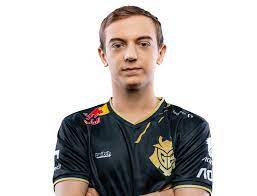

Nach einenm umkämpften Spiel geht G2 als Sieger hervor. Im frühen Spielverlauf konnte sich Fnatic einige Vorteile erspielen, vor allem durch ihren Fokus auf die Midlane und den Midlaner von G2 Rasmus "caPs" Winther der allerdings nur einmal frühzeitig in die Basis zurückkehren musste und den Ganks mehrere Male auf spektakuläre Weise entkommen ist. Dieser Fokus lies sich aber nur im Farm leicht bemerken, denn im späteren Spiel ließ es sich Caps nicht nehmen, mit einer äußerst starken Leistung und natürlich starker Hilfe von Rest des Teams, die Partie für sich zu entscheiden. 